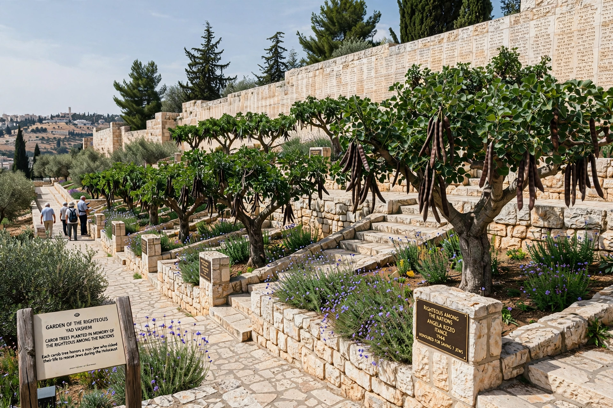

| Righteous Among the Nations | |
|---|---|
 | |
| Awarded by | State of Israel, through Yad Vashem |
| Established | 1963 |
| Recipients | More than 28,000 individuals from over 50 countries |
Righteous Among the Nations (Hebrew: חסידי אומות העולם, hasidei ummot ha-olam) is an honorific used by the State of Israel to describe non-Jews who risked their lives during the Holocaust to save Jews from extermination by the Nazis and their collaborators. The title is awarded by Yad Vashem, Israel's official memorial to the victims of the Holocaust, under a programme established in 1963 as part of the Yad Vashem Law of 1953.
Recipients are recognised when documentation or survivor testimony shows that a non-Jewish person actively aided a Jewish person who was in danger of deportation or death, at significant risk to their own life, liberty or position, without demanding financial compensation, and with the sole motivation of helping the persecuted. Cases are investigated by a public commission of the Righteous Among the Nations Department at Yad Vashem, chaired by a retired justice of the Supreme Court of Israel, which reviews documents and interviews witnesses before deciding whether the criteria have been met.
Those recognised receive a certificate of honour and a medal inscribed with the Talmudic saying, "Whoever saves a single life, saves an entire universe." In the early years of the programme, recipients planted trees in the Garden of the Righteous on the Mount of Remembrance in Jerusalem; when space ran out, names were instead engraved on the Wall of Honour in the garden. Recipients who are still living, and their families, are often hosted in Israel, and some have been granted honorary Israeli citizenship.
More than 28,000 people from over 50 countries have been recognised. The largest groups come from Poland, the Netherlands and France, reflecting where rescue activity and documentation were greatest. Well-known recipients include German industrialist Oskar Schindler; Swedish diplomat Raoul Wallenberg; Dutch resistance member Corrie ten Boom; Irena Sendler, who smuggled children out of the Warsaw Ghetto; Chiune Sugihara, the Japanese consul in Lithuania who issued transit visas; and Aristides de Sousa Mendes, the Portuguese consul in Bordeaux. Entire communities, such as the Danish resistance (recognised collectively) and the villagers of Le Chambon-sur-Lignon in France, have also been honoured.